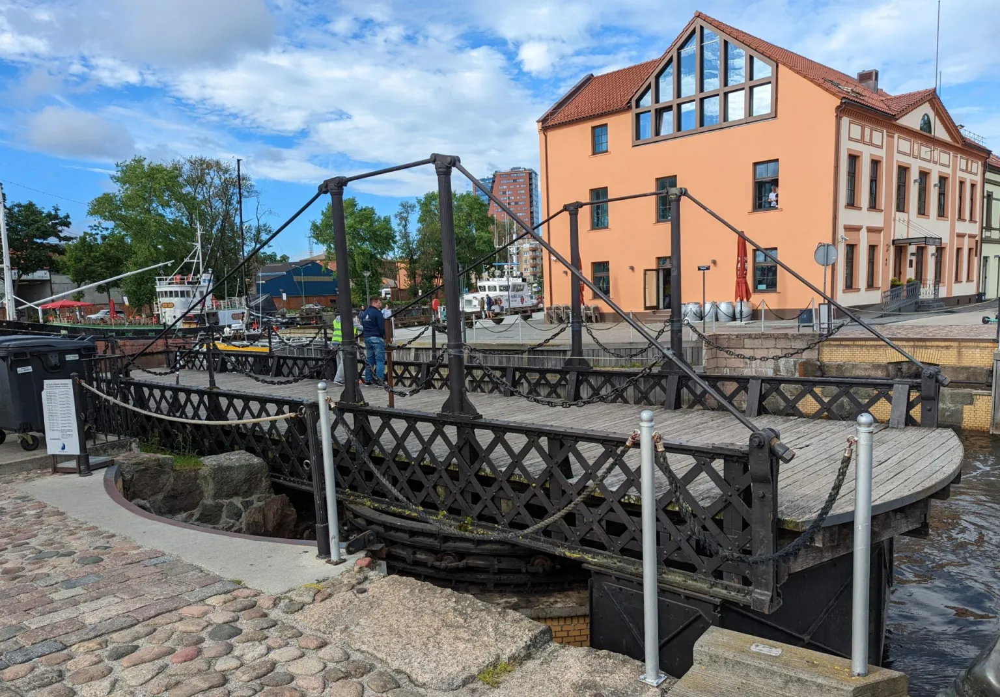

Rusn 309: Week 2
-
Monday, June 23:
Course Overview (final project (should include a web site, a 360 video tour with one egg hunt item))
Discussion of Pavel Chukhrai's film Cold Tango
-
Tuesday, June 24:Today is Joninės is an old pagan Lithuanian summer solstice celebration, later identified with St. John's Day.
-
Wednesday, June 25:
VR tour element of the final project workshop
The workshop will be on Zoom: zoom link
For this class meeting watch videos at the following link (I haven't posted the link)
Access Zoom from your laptop.
-
Thursday, June 26:
-
Friday, June 27:
In-class discussion on Russians in post-Soviet Baltics.
Reading: Aksel Kirch, Marika Kirch, and Tarmo Tuisk, “Russians in the Baltic States,”
Journal of Baltic Studies, Summer 1993, Vol. 24, No. 2, Special Issue: Public Opinion in the Baltic States (Summer 1993), 173-188.
Please meet at 1:30 pm in room 121
-
Saturday, June 28: field trip to Kaunas and Klaipeda
-
Sunday, June 29: field trip to Kaunas and Klaipeda

Fig.1. Pedestrian Draw Bridge. Klaipeda. Every 15 minutes two guys come and open it for boats and then close it again 15 minutes later.